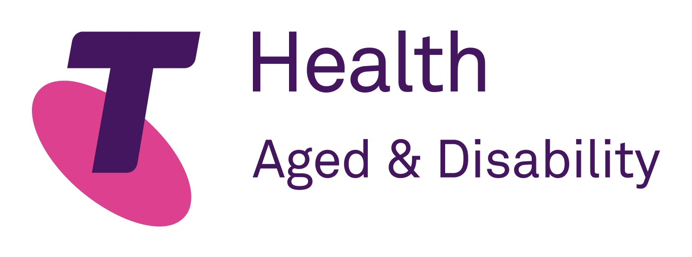
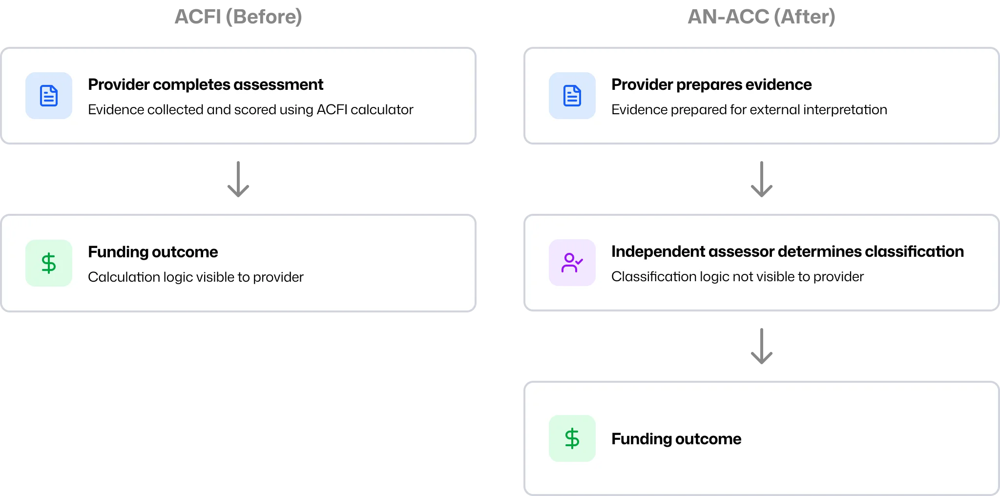
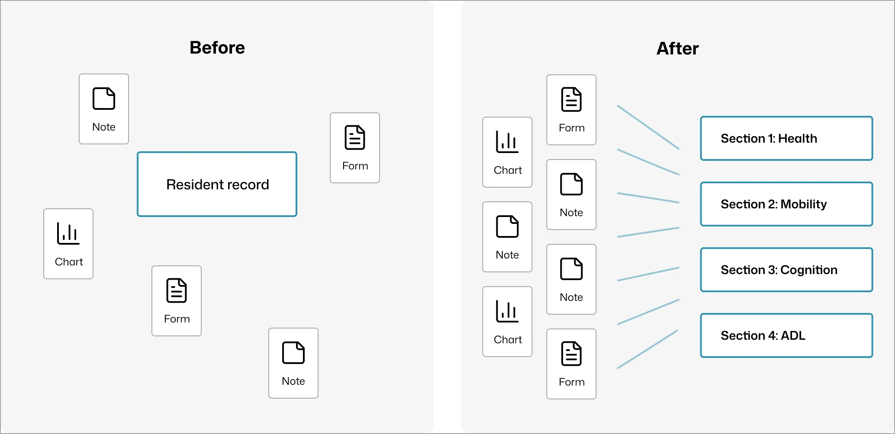
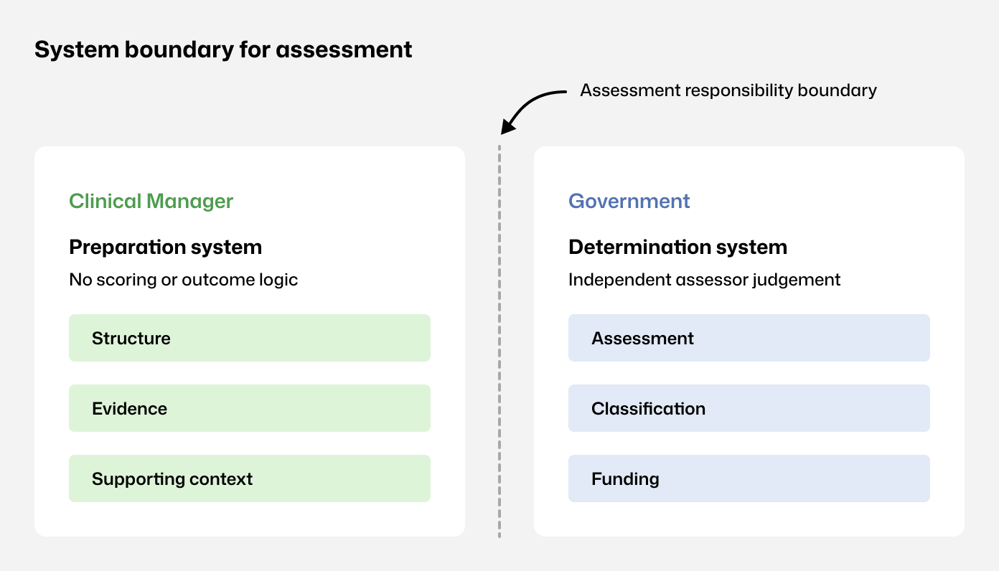
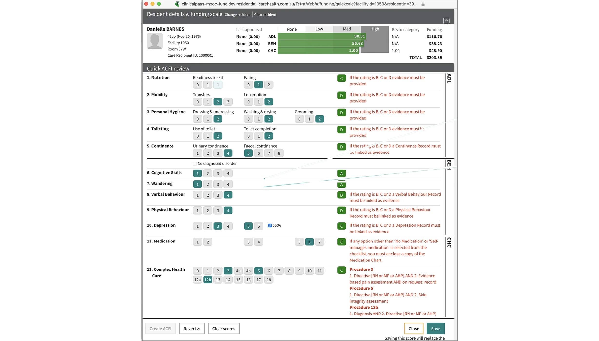
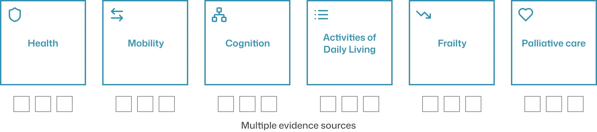
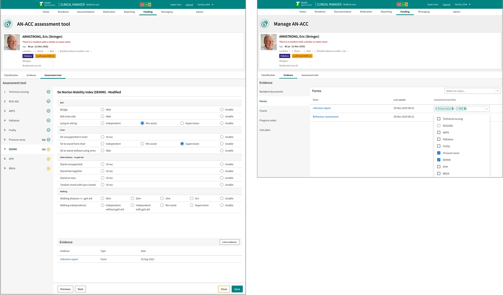
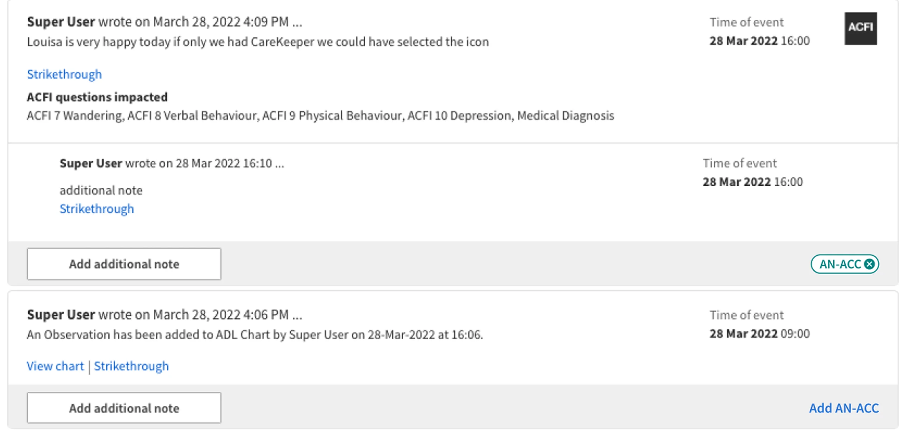
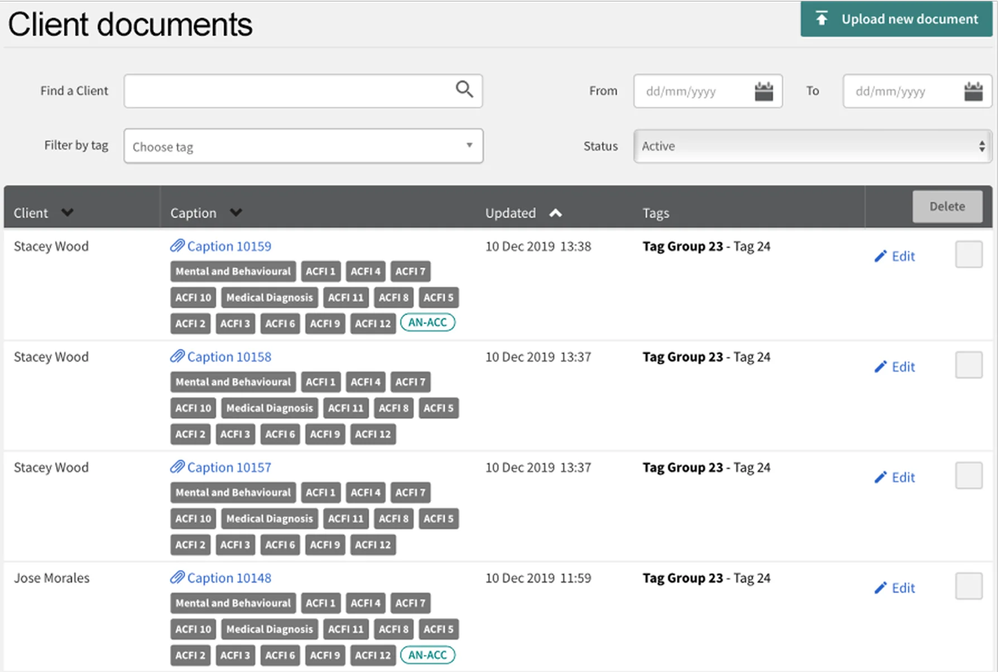
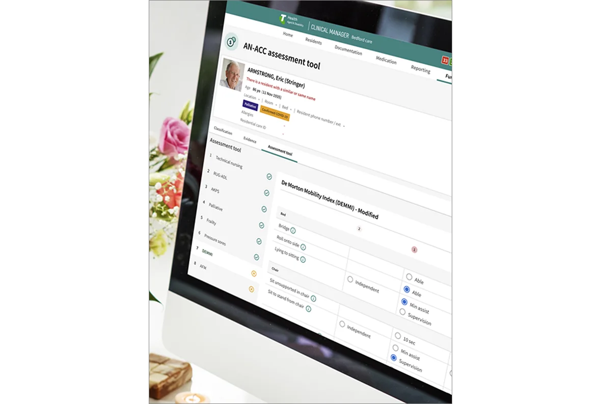

Clinical Manager is the operational system residential aged-care providers use daily for clinical documentation, administration, and compliance. When the Royal Commission-driven AN-ACC reform replaced ACFI and moved funding classification to independent government assessors, I designed the Clinical Manager update that turned funding preparation from an internal scoring exercise into assessor-aligned evidence preparation.
From provider-led funding calculation to assessor-aligned preparation
Evidence traceability organised by the national assessment structure
Assessment preparation embedded within a live, legacy care platform
The Royal Commission identified systemic issues in aged-care funding, including inconsistent classification practices and incentives misaligned with resident need. In response, the Australian Government replaced ACFI with AN-ACC to standardise assessment nationally and remove funding determination from providers.
This was not a product change. It was a structural shift in responsibility and accountability.
Under ACFI, assessments were completed internally. Evidence was collected, scored, and reviewed in-house. Funding outcomes could be estimated using a calculator. Scoring logic was visible to providers.
This transparency shaped behaviour. Because outcomes could be anticipated, preparation practices aligned to known scoring mechanics. During the Royal Commission, this dynamic was cited as a risk to equity and consistency, including optimisation around residents aligned to higher funding bands.
Clinical Manager reflected this model through calculator-led workflows and score-driven interpretation.
AN-ACC shifted assessment responsibility away from providers. Under the new model, independent assessors apply a national assessment tool. Classifications are no longer determined internally. Funding depends on assessor interpretation of submitted evidence. Classification logic is not visible to providers. Internal systems shifted from assessment to preparation.
Early interviews with service managers highlighted concern about funding risk, assessor interpretation, and whether existing documentation would be sufficient under external review.

At rollout, the logic used by assessors to determine classifications was not available to providers. Preparation quality now depended on whether assessors could locate relevant evidence, understand its context, and interpret resident need accurately. This increased the importance of structured, complete, and easily retrievable evidence.
Within Clinical Manager, existing workflows reinforced a scoring mindset that no longer applied. Evidence existed across notes, charts, and forms but was not organised by assessment section. Calculator patterns implied predictability and control that providers no longer had. The primary risk was not usability. It was preparing staff for a process that no longer existed.

Staff weren't trying to influence classification outcomes. They wanted to know how to prepare evidence that would hold up under an assessor's independent review.
Before any interface decisions, I made the system boundary explicit.
The system would: support preparation for assessment; reflect the AN-ACC assessment structure; surface evidence in assessment context.
The system would not: determine classifications; predict funding outcomes; reproduce ACFI optimisation patterns.

Three decisions I made shaped the system.
Avoid optimisation patterns that imply control over classification. Do not reproduce funding calculators or prediction logic inside Clinical Manager.

Use AN-ACC instruments as the primary information architecture. Assessment navigation mirrors the national instrument structure, creating a shared definition of completeness and reducing missed sections.

Link evidence at the assessment-section level. Evidence remained part of the resident record while becoming explicitly linkable to assessment sections, enabling traceability without duplication.

I prioritised predictability throughout: stable navigation by assessment section; consistent layouts across instruments; visible evidence status in context; linear progression over branching. This reduced decision load while staff continued routine care.
Each weakened traceability or implied outcome control, conflicting with AN-ACC's separation of preparation and determination.
I ran iterative testing sessions with clerical users across multiple facilities, using prompt-based questions such as "What do you expect to happen next?" to surface assumptions and misunderstandings early, before they became costly to fix in build.
Staff wanted a clear, step-by-step assessment flow; the ability to collect supporting notes and documents; transparent mapping between evidence and AN-ACC classifications; and confidence going into the official government assessment.
Based on that feedback, I added an editable progress notes component, refined the tagging workflow, improved hierarchy to avoid unexpected navigation jumps, and adjusted terminology to match on-floor language.


Structural impact: One preparation flow replaced four to five disconnected screens. Assessment sections and linked evidence presented together. Increased staff confidence during readiness activities.
Measured outcomes: Evidence lookup time reduced by approximately 70% (6–10 minutes to under 2 minutes). Reduced follow-up clarification after preparation.

Facilities regained control over preparation quality without implying control over classification outcomes.
AN-ACC reframed funding preparation as an evidence and interpretation problem. By aligning system structure to the assessor lens and making evidence explicit within the resident record, Clinical Manager implemented a preparation model capable of supporting reform-driven change without reworking underlying care workflows.